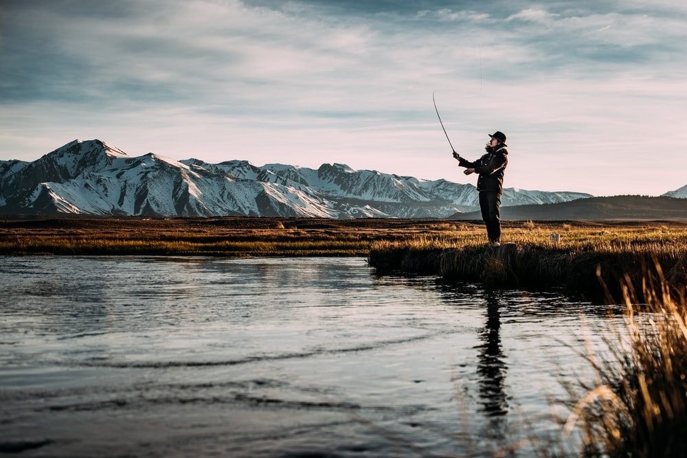

With different types of water comes different types of fishing. Fly fishing is mainly used on rivers but can also be used on lakes and oceans, Fly fishing is considered an art because there are many aspects that go into being able to successfully catch a fish unlike other fishing types such as Bass fishing. Fly fishing requires being in constant motion and is considered a much faster pace than others.